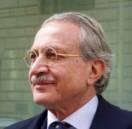

Curriculum Vitae of Maurizio Dècina (4/2012)
Details
- General
- · Professor of telecommunications at the Department of Electronics and Information of the Politecnico di Milano (Milan, Italy) from 3/1987 – today.
- · President of the Ugo Bordoni Foundation, Rome, 2007-2008.
- · Scientific Director of the CEFRIEL Center of Research, Milan, 1/1988-2/2003.
- · President of the “IEEE Communications Society”, New York, 1994-1995.
- · Editor in Chief of the publication “European Transactions on Telecommunications", Milan, 1991-1997.
- · Executive Director of the R&D Laboratories of ITALTEL, Milan, 2/1983-2/1987.
- · Scientific consultant of the Bell Telephone Laboratories - AT&T, Chicago, 6/1981-6/1982 and 1989-1990.
- · Assistant, Assistant Professor and then Full Professor, University of Rome – Faculty of Engineering, 11/1976-2/1983.
- · Vice Chairman of the CCITT Study Group XVIII, Geneva, 1972-1988.
- · Employee and then Manager at SIP (today Telecom Italia), New Tecnologies Division, Rome Headquarters,11/1969-11/1976.
- · Assistant researcher and then researcher at the Ugo Bordoni Foundation in the electrical communications Dpt, Rome, 6/1967-11/1969.
- · IEEE "Fellow Award”, 1986, citation: "For contributions to digital communications and to voice/data packet switching”.
- · IEEE "Award in International Communications", 1997, citation: “For leadership and contributions to international network development and for fostering international technical cooperation”.
- · IEEE “Third Millennium Medal Award”, 2000, citation: "For outstanding contributions to the field of communication technology".
- · IEEE “IEEE ComSoc/KICS Exemplary Global Service Award”, 2008, citation: "For exemplary commitment and outstanding service given to the globalization of the IEEE Communications Society".
- Professional activities
- · Politecnico di Milano – Faculty of Engineering, 3/1987 - today
- He carries out research activity in the Department of Electronics and Information in the fields of Internet evolutions, networking security and interoperability.
- · Ugo Bordoni Foundation, Rome, 2/2007-11/2008
- He carried out research and consultancy activity for the Communications Minister and the Italian Communications Authority. During his chairmanship he proceeded with reorganization of the research areas and the launch of new bylaws to consolidate the Foundation's mission.
- · CEFRIEL, Milan, 1/1988-2/2003
- Center of Research and Education in Information Tecnology is a consortium with the partecipation of major information and telecommunications industry partners. He has been the founder and the director of the Center, the budget for R&D to 6m€ in 2002.
- · IEEE Communications Society (Comsoc), New York, 1994-1995
- IEEE is the American and international association for telecommunications engineers. In 1994 it had 40.000 members all over the world. He pushed the internationalization of Comsoc and the process of evolving publication & conference activities using the Internet technology.The charge of President is elective: he managed a budget of more than 25M$ per year for journals and conferences.
- · "European Transactions on Telecommunications", Milan, 1991-1997
- Editor in Chief of an international technical journal published in collaboration between the countries of the European Community (EUREL/AEI).
- · ITALTEL, Milan, 2/1983-2/1987
- Executive Director of R&D and coordinator of R&D (a laboratory with about 800 employees) for developing a family of digital switching equipment called “Linea UT” (this equipment today serves about 70% of the Italian wired telephony customers), incorporating ISDN and data features.
- · Bell Telephone Laboratories, AT&T, Chicago, 6/1981-6/1982 e 1989-1990
- Consultant, for the development of esplorative broadband switching equipment using wideband packet technology (the Fast Packet Switching Test-bed in 1981/82) and free-space photonic technology (the Optical Cross-Connect Test-bed of 1989/90), coordinating a laboratory with about 10 employees.
- · University of Rome – Faculty of Engineering, 11/1976-2/1983
- He joined the INFOCOM Department of the University of Rome and get the chair of Full Professor of “Telephone and Telegraph Technology” in 1980. Research activity focused on the digitalization of the telephone network and the development of fast packet communications.
- · CCITT, Geneva, 1972-1998
- He covered different offices in the CCITT (today ITU-T, International Telecommunication Union) responsible for standard development of digital transmission, video and voice codecs, packet data networks and telephone signaling networks.
- · SIP - Headquarters, Rome,11/1969-11/1976
- Employee and then Manager at SIP (today Telecom Italia) in the New Techniques department. He managed the department dealing with the engineering of digital transmission systems for telephony and data.
- · Ugo Bordoni Foundation, Rome, 6/1967-11/1969
- Researcher in the Electrical Communications department. He performed some early research on digital encoding of telephone signals and on baseband digital trasmission systems over copper cables.
- Teaching activity and university career
- · 1977 – Assistant – ‘Electrical communications’, University of Rome “La Sapienza”, Faculty of Engineering.
- · 1977 – Assistant professor - ‘Electrical communications’, University of Cagliari, Faculty of Engineering.
- · 1977-1979 – Assistant professor - ‘Electrical communications’, University of Ancona, Faculty of Engineering.
- · 1978-1979 – Assistant professor - ‘Electronics manufacturing’, University of Rome “La Sapienza”, Faculty of Engineering.
- · 1979 – Assistant professor – ‘Telephone and telegraph technology’, University of Rome “La Sapienza”, Faculty of Engineering.
- · 1980 – Full professor - ‘Telephone and telegraph technology’, University of Rome “La Sapienza”, Faculty of Engineering.
- · 1981-82 – 1 sabbatical year for research at Bell Telephone Laboratories of Naperville, Illinois, USA.
- · 1983-1987 – 4 years for on leave of absence as Director of the Central Research Laboratories of Italtel, Milan.
- · 1987-1989 – Full professor – ‘Circuit theory’, Politecnico di Milano, Faculty of Engineering.
- · 1989-1992 – Full professor – ‘Switching systems’, Politecnico di Milano, Faculty of Engineering.
- · 1992-1998 – Full professor – ‘Telecommunications networks’, Politecnico di Milano, Faculty of Engineering.
- · 1998-2001 – Full professor – ‘Telematics’, Politecnico di Milano, Faculty of Engineering.
- · 2001-2002 – 1 sabbatical year.
- · 2003-2011 – Full professor – ‘Internet infrastructure and protocols’, ‘Network security’, ‘Internet: infrastructure and security’, ‘Cryptography and Security’, ‘Mobility and Network Security’, Politecnico di Milano, Faculty of Engineering.
- · Illinois Institute of Technology, Dept of Electrical Engineering, Chicago, Ill., USA, Visiting Professor,
- · PhD course, “Electronic Switching Systems”, Fall 1981
- · PhD course, “Broadband Switching Systems”, Summer 1990
- · University of Switzerland, Faculty of Communication Science, Lugano, Assistant Professor
- · “Information Systems and Technologies”, for 4 academic years, 1996-2000.
- International activities
- · 1972-1988 - Vice Chairman of the CCITT Study Group XVIII (Digital Networks); Chairman of various Working Parties: Wideband Codecs, Line Transmission and Speech Processing.
- · 1973-1981 - Vice Chairman of the CEPT Study Group CD (Data Communication) and Chairman of the Working Party Network Aspects.
- · 1973-1980 – member of the CCITT Study Group VII (Data Networks) and Rapporteur Interface Applications in the ISDN.
- · 1978-1981 – member of the CEPT ad hoc Group, and later Permanent Nucleus, ISDN Matters.
- · 1982-1987 – member of the "Technical Advisory Committee" of ESA (European Space Agency).
- · 1984-1988 - Senior Editor of the IEEE journal “Journal on Selected Areas in Communications”.
- · 1988-1989 - Vice President International Affairs of the “IEEE Communications Society”.
- · 1990-1992 – member of the IEEE “Fellow Awards Committee”.
- · From 1990 is a member, and today an honorary member of the International Advisory Committee of the International Teletraffic Congress (ITC).
- · 1991-1997 - Editor in Chief of the lounal EUREL/AEI “European Transactions on Telecommunications”.
- · 1993-1996 – member of the IEEE “Alexander Bell Medal Committee”.
- · 1996-2001 – member of the IEEE “Eric Sumner Award Committee”.
- · He served the “IEEE Communications Society” in several committees (international advisory, prize paper, communications switching, computer communications, strategic planning, …) and conferences (ICC, GLOBECOM, ISDN, ISS, ISSLS, ICCC, INFOCOM, NOAMS, ICASSP, IZS, ITS).
- · He organized numerous sessions and panels for: ICC, GLOBECOM, INFOCOM, ISDN, ICCC, ITC, ITS and IZS.
- · He has delivered various keynotes and banquet speeches for: ICC, GLOBECOM, INFOCOM, NOAMS, ICASSP, ITS, IZS, ECOC.
- · He was: General Chairman of two ITC Seminars (1986, Lake Como, ISDN traffic engineering; 1991, Santa Margherita, UPT traffic engineering); General Chairman of INFOCOM'92; and Technical Program Chairman of IZS'94.
- National activities
- · Deputy Director of the “Telecommunications” Project sponsored by CNR, 1988-1994.
- · Member of the Superior Technical Council for Communications, 1996-2002.
- · Consultant of AIPA (Authority for Information in the Public Administration), 1989-1998.
- · Consultant of the Italian Communications Authority (AGCOM), 1999-2011.
- · Consultant of the Innovation and Technology Minister, 2002-2005.
- Other professional consultant activities
- · Since 1977 professor Dècina acted as a professional technical consultant either for international organizations or companies.
- · For ITU, International Telecommunications Union, of Geneva in technical cooperation programs for telecommunications development in Central and South America (Brazil, Argentina, Mexico…).
- · For manufacturing companies, in research prototypes development programs; among them:
- • Bell Telephone Laboratories, AT&T, Chicago, 1982/1983 e 1989/1990.
- • IBM Research Laboratories, Zurich, 1985/86 e 1991/1992.
- · For telecommunications companies, either service providers, or manufacturers, for development of innovative products and services, for market evaluations and international partnerships.
- · Professor Dècina was also a non-executive Member of the Boards of Directors of several Italian companies; amomg them:
- · Datamat spa, Rome (Quoted at the Nuovo Mercato, Milan) - 2000-2002
- · I.NET spa, Milan (Quoted at the Nuovo Mercato in Milan ) - 2001-2002
- · Italtel spa, Milan – 2000-2010
- · SIA, Societa’ Interbancaria di Automazione, spa, Milan - 1988-1998 and 2001-2002
- · Telecom Italia spa, Rome (MIB30 Milan stock market) - 1997-1998
- · Tiscali spa, Cagliari (Quoted at the Nuovo Mercato, Milan) - 2000-2002.
- · Professor Dècina was member of the Technical & Scientific Advisory Boards of several manufacturing companies, capital funds and international foundations; amomg them:
- · Boston Technologies Inc., Boston, Mass. USA – 1996-2000
- · Home Wireless Networks Inc., Atlanta, Ge. USA – 2000-2002 · KIWI II Ventura Servicios, Lugano, Switzerland - 2000-2008
- · Alice Lab, Milan – 2001–2006
- · Fondo NEXT, Finlombarda, Milan – 2005–2009
- · Fondazione Silvio Tronchetti Provera, Milan, 2002 - today
- · Fondazione Accenture Italia, Milan, 2002 – 2006.
- · Professor Dècina founded two Italian companies operating in the areas of: strategic & engineering consulting, and managed security services:
- · ICT Consulting spa, Milan, – founded in 1998.
- · Securmatics spa, Milan, - founded in 2001.
Name: Maurizio Dècina.
Date of birth: January 10, 1943.
Place of birth: Pescasseroli (L’Aquila) – Italy.
Education: Classic Lyceum, Torquato Tasso, Rome, 1960. Dott. Ing degree
in Electronic Engineering from the University of Rome in 1966.
Profession (Faculty Position)
International Awards

Politecnico di Milano
Piazza Leonardo da Vinci, 32
I-20133 Milano
email: maurizio@mauriziodecina.it
m.decina@ieee.org
URL: http://www.mauriziodecina.it
Additional teaching activity in the following universities
Standard bodies, journal and conference technical-scientific committees, professional associations